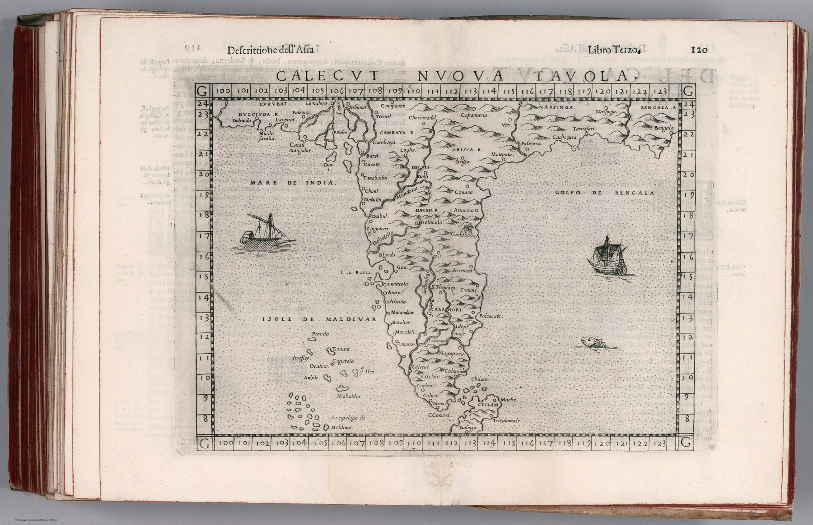

The edition
Calecut Nuova Tavola appears in the 1599 Venetian edition of Ptolemy translated and expanded by Girolamo Ruscelli, with revisions by Giuseppe Rosaccio. It is a copperplate map in a book that deliberately paired classical geography with ‘new’ regional tables.
Calicut as the organising place
The title gives Calicut exceptional prominence. A century after Vasco da Gama’s arrival, the Malabar port still condensed Europe’s image of the south-western coast: pepper, maritime exchange and the first Portuguese route into the Indian Ocean trading system.
Correction within continuity
The map updates coastal geography using post-Ptolemaic information while keeping Ptolemy’s book as its frame, in the manner of the Strasbourg Tabula Moderna Indiae of 1525: a new sheet bound into an ancient work.
On the sheet
The graticule says what kind of new table this is. The peninsula sits between 100° and 123° of longitude, the Ptolemaic reckoning that placed India some thirty degrees too far east, and the latitudes run from 8° to 24°. Inside that inherited frame the names are the Portuguese century’s: Goa, Cananor, Calecut, Cochin, Colan and Chaul along the Mare de India, Dabul, Batacala and C. de Rama; the kingdoms Cambaya, Dacan, Narsinga, Orissa and Bengala inland; Ceilam a small island off the tip; and the Isole de Maldivar strung down the left. Calecut itself is one name among twenty on the coast, in the same small italic as the rest. The page number, 120, and the running head Descrittione dell’Asia, Libro Terzo show the map as what it is, a leaf of a book.
The gaze
Calicut in the title does most of the work. A Venetian reader of 1599 knew the name from a century of pepper and Portuguese news, and the map offers the coast that name stood for and little more. The subcontinent shrinks to its most talked-about shore.
In the Deccan timeline
Madurai and the southern conquest (c. 1335–1378) · Abdur Razzaq at Vijayanagara (1442–1444) · The Portuguese at Calicut (20 May 1498) · The nayakas (c. 1529–1565 and after)